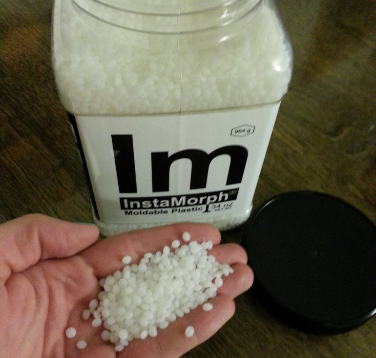
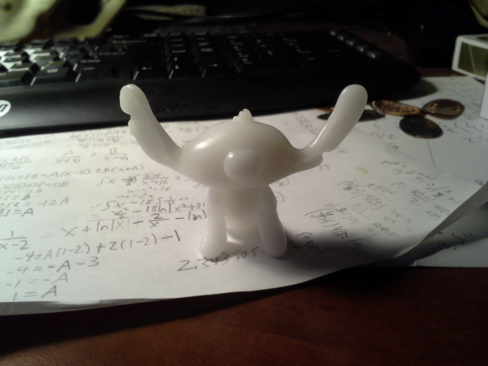
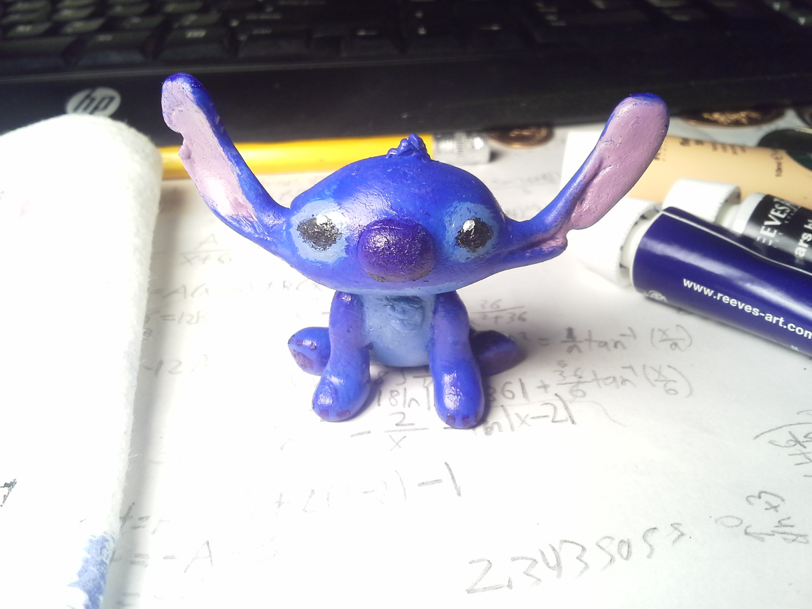
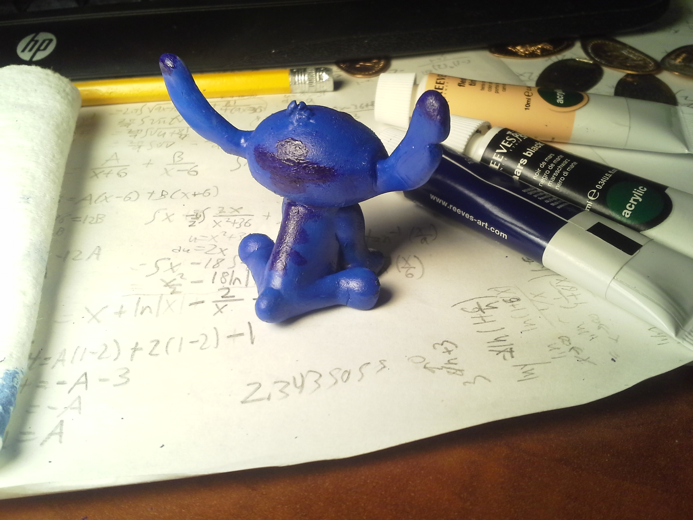

I created this as a present for a friend many years ago. It is made of a moldable plastic called Instamorph that comes as tiny pellets which when boiled become soft like clay. Once it cools it becomes solid and durable. You can always boil anything you make again if you want to reuse it for something else.
Since my friend liked the movie Lilo and Stitch I decided to make a little Stitch figurine for them. First I made the rough shape of the head then the body, and merged the two pieces together by carefully heating the parts on the pieces where they'd connect up and squished them together until they cooled and bonded as one piece.
I repeated this process for the other parts and details like ears and hair tuft until it was a satisfying enough model. To complete it I heated up the bottom of the model and squished it down slightly on a flat surface so once cooled it would be able to sit down evenly.
Once the base model was done I pulled up reference images of Stitch from different angles and started to paint. I used acrylic paints and mixed together different colors to get the right hues of blue and pink. For some of the finer details like the sparkles in his eyes I used the tip of a pencil since it was more precise than my brushes.
 